|
|
| green seaweeds text index | photo index |
| Seaweeds > Division Chlorophyta > Family Caulerpaceae > genus Caulerpa |
| Round
sea grapes Caulerpa lentillifera* Family Caulerpaceae updated Oct 2016 Where seen? This pretty seaweed is made up of tiny balls. It grows on rocks and coral rubble in small clumps. In Singapore, it does not form extensive blooms. Features: The seaweed resembles bunches of little grapes. Each 'grape' is tiny (0.1-0.2cm) spherical, translucent. The 'grapes' are usually tightly packed on a vertical 'stem', the whole often forming a sausage-like shape (2-10cm long). This species is distinguished by the distinct constriction where the 'grape' attaches to the stalk. The 'stems' emerge from a long horizontal 'root' that creeps over the surface. Colours range from bright green to bluish and olive green. Sometimes confused with Oval sea grapes (Caulerpa racemosa). Caulerpa microphysa can look very similar but lack the distinct constriction where the 'grape' attached to the stalk. Here's more on how to tell apart the sea grapes seaweeds. Human uses: Round sea grapes are a popular edible species in some places. In the Philippines, the seaweed is eaten fresh as a salad, or salted so it can be eaten later. Small quantities are also exported to Japan. It is also eaten in Malaysia and Indonesia. This seaweed is commercially farmed in Cebu, Philippines. Cuttings are planted by hand in muddy mangrove ponds and harvested about two months later. The seaweed is also fed to livestock and fish. The seaweed is high in minerals and is said to taste refreshing. It is also reported to have antibacterial and antifungal properties, and to be used to treat high blood pressure and rheumatism. However, some Caulerpa species produce toxins to protect themselves from browsing fish. This also makes them toxic to humans. |
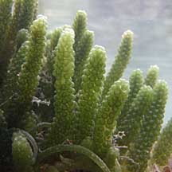 Terumbu Semakau, May 10 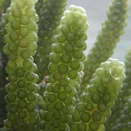 Tightly packed 'grapes' form a sausage-like shape. |
|
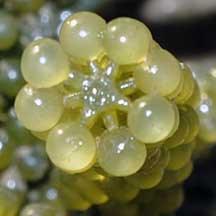 Beting Bemban Besar, Apr 10 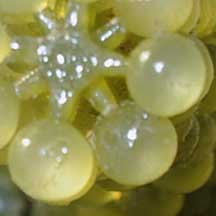 Constriction where the 'grape' attached to the stalk. |
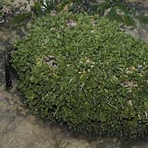 Labrador, May 09 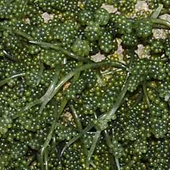 |
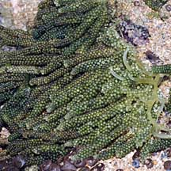 Pulau Semakau, May 08 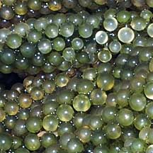 |
*Species are difficult to positively identify without close examination of internal parts.
On this website, they are grouped by external features for convenience of display.
| Round sea grapes on Singapore shores |
| Photos of Round sea grapes for free download from wildsingapore flickr |
| Distribution in Singapore on this wildsingapore flickr map |
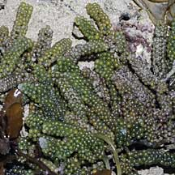 Pulau Senang, Aug 10 |
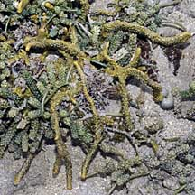 Terumbu Berkas, Jan 10 |
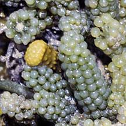 |
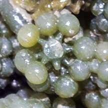 |
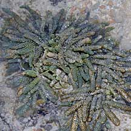 Pulau Salu, Jun 10 |
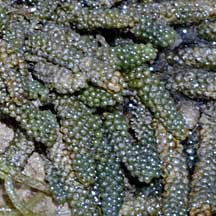 |
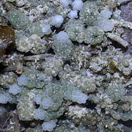 Pulau Salu, Aug 10 |
Links
|
|
|